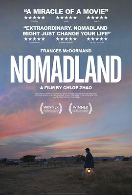

无依之地 / Nomadland
影视 · 看过 · 2024-10-13 · 4 星
又名：浪迹天地(港) / 游牧人生(台) / 游牧之地

2020-09-11(威尼斯电影节) / 2021-01-29(美国) / 2021-02-19(美国网络) / 弗兰西斯·麦克多蒙德 / 大卫·斯特雷泽恩 / 德里克·贾尼斯 / 泰·斯特雷泽恩 / 卡特·克利福德 / 彼得·斯皮尔斯 / 盖伊·德福雷斯特 / 帕特里夏·格里尔 / 琳达·梅 / 安吉拉·雷耶斯 / 美国 / 赵婷 / 108分钟 / 无依之地 / 剧情 / 赵婷 Chloé Zhao / 杰西卡·布鲁德 Jessica Bruder / 英语
开着caravan随遇而安，看似很酷的生活方式，实际上是那些人不得不离开他们原来的生活。 See you on the road.
作品信息
| 导演 | 赵婷 |
| 编剧 | 赵婷 / 杰西卡·布鲁德 |
| 主演 | 弗兰西斯·麦克多蒙德 / 大卫·斯特雷泽恩 / 德里克·贾尼斯 / 泰·斯特雷泽恩 / 卡特·克利福德 / 彼得·斯皮尔斯 / 盖伊·德福雷斯特 / 帕特里夏·格里尔 / 琳达·梅 / 安吉拉·雷耶斯 / 卡尔·R·休斯 / 道格拉斯·G·苏尔 / 瑞安·阿基诺 / 特蕾莎·布坎南 / 凯莉·林恩·麦克德莫特·怀尔德 / 布兰迪·威尔伯 / 马克西·埃切维里 / 鲍勃·威尔斯 / 安妮特·威尔斯 / 瑞秋·班农 / 夏琳·斯旺基 |
| 类型 | 剧情 |
| 制片国家/地区 | 美国 |
| 语言 | 英语 |
| 上映日期 | 2020-09-11(威尼斯电影节) / 2021-01-29(美国) / 2021-02-19(美国网络) |
| 片长 | 108分钟 |
| IMDb | tt9770150 |
说过什么
2024-10-13 10:48:41
看过 · 时间来自广播，短评来自标记页
开着caravan随遇而安，看似很酷的生活方式，实际上是那些人不得不离开他们原来的生活。 See you on the road.
2021-04-27 15:50:13
广播 · 想看
标签：2020 · 美国 · 社会 · 生活 · 人生
最后一次看到是 2026-08-01T11:04:15+10:00 · 豆瓣原页